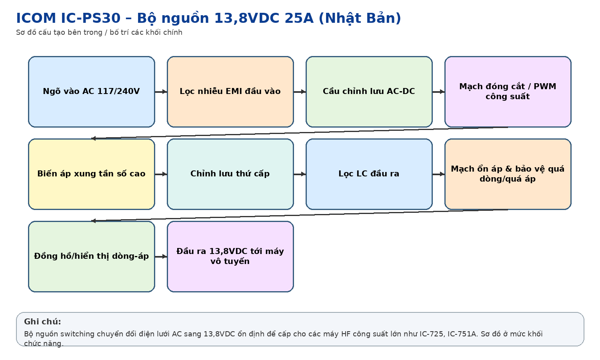
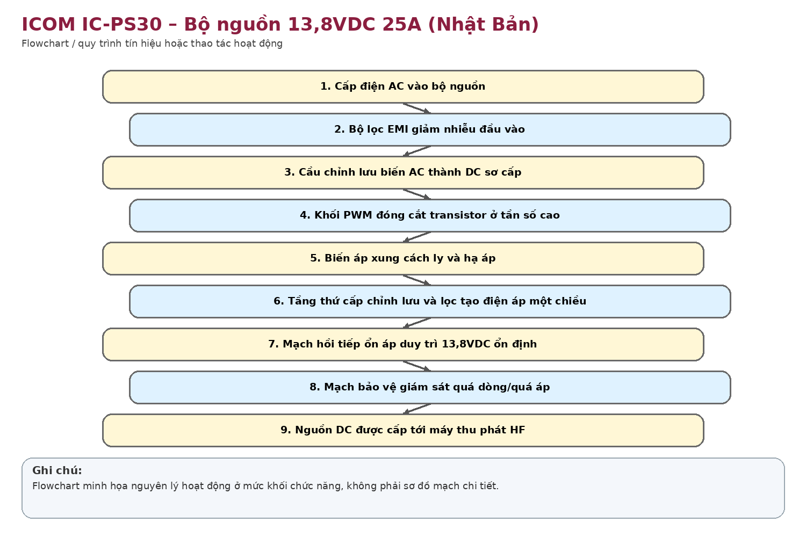
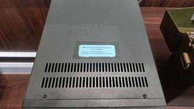
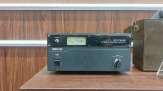
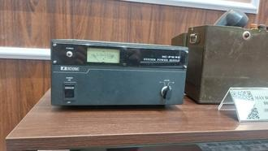
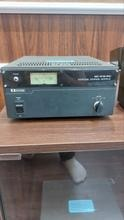
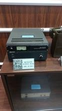
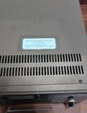

Nhận dạng & niên đại
Công dụng
Công dụng chung
Chuyển nguồn điện lưới AC thành 13,8 VDC dòng lớn, ổn định để cấp cho máy thu phát vô tuyến công suất 100 W và các thiết bị 13,8 V khác.
Trong thông tin tín hiệu đường sắt
Cấp nguồn cho trạm HF cố định như IC-751A/IC-725 và các máy tương thích, bảo đảm dòng phát lớn và điện áp ổn định.
Phạm vi làm việc
Được thiết kế cho máy thu phát 100 W và thêm một số máy công suất thấp; đồng hồ mặt trước theo dõi điện áp/dòng.
Cấu tạo bên trong

Lọc đầu vào; chỉnh lưu; bộ đóng cắt tần số cao; biến áp xung; chỉnh lưu/lọc thứ cấp; mạch hồi tiếp ổn áp; bảo vệ/cầu chì; đồng hồ V/A và đầu ra DC.
Cách thức hoạt động

Nguồn switching chỉnh lưu điện lưới, đóng cắt ở tần số cao rồi qua biến áp xung và mạch hồi tiếp để tạo 13,8 VDC ổn định. Hiệu suất cao hơn nguồn tuyến tính cùng công suất nên kích thước/khối lượng giảm.
Thông số kỹ thuật
Thông số chính
Input 117/240 VAC, 50/60 Hz; output 13,8 VDC; dòng tải tối đa 25 A theo chu kỳ 50% (10 phút ON/10 phút OFF theo manual); công suất vào khoảng 430 W ở tải 25 A; kích thước khoảng 241×110×300 mm; khối lượng khoảng 5,0 kg.
Nguồn điện / cấp nguồn
Nguồn vào AC 117/240 V; đầu ra DC 13,8 V, negative ground.
Giá trị lịch sử – trưng bày
Hoàn chỉnh câu chuyện của cụm vô tuyến HF: không chỉ có máy thu phát mà còn cho thấy hệ thống nguồn chuyên dụng cần thiết để vận hành trạm 100 W.
Tình trạng quan sát
Có nhiều ảnh mặt trước, trên và sau; đồng hồ, công tắc và núm METER còn đủ; vỏ có dấu sử dụng. Chưa kiểm tra điện.
Ảnh hiện vật






Xác minh thêm & nguồn tham khảo
Căn cứ mốc sử dụng tại Việt Nam/ĐSVN:
Ước
tính theo hệ thiết bị đi kèm.